Kritisches Denken
Wie kann KI kritisches Denken in MINT-Fächern fördern?
v0.5.0
Wolfgang Spahn
10.09.2026
Infos
Bitte diesen Link verwenden:
Für Vollbildmodus bitte diesen Button “Fullscreen” klicken oder Taste “F11”.
Willkommen im Atelier
Umfrage
Habt Ihr einen ChatGPT (Gemini, Claude) Account?
Habt Ihr eine bezahlte Version (Pro, Plus, Enterprise)?
Agenda
- KI Status 2026 (I) 35min
- KI etabliert sich 🞋[Euer-KI-Ziel]
- KI verändert die Schule 🞋[Zeitenwende]
- Lernen und Lehren mit/trotz Künstlicher Intelligenz (II) 55min
- Mit KI auf Augenhöhe: s.d. 🞋[Zeichnen] 🞋[Richtig-Fragen] [Geschichtsverständnis]
- Mit KI auf Augenhöhe: g.k. [Biologie] [Kurvendiskussion] 🞋[Känguruh-Math]
- Basale Kernkompetenzen lernen 🞋[Atombau]
I.
KI Status 2026
Euer-KI-Ziel
Input 1:
Input 2::
KI - Entwicklung - 2026 1/2
Komplexität einer autonomen Aufgabe (gemessen am menschlichen Zeitaufwand) verdoppelt sich alle 7 Monate.
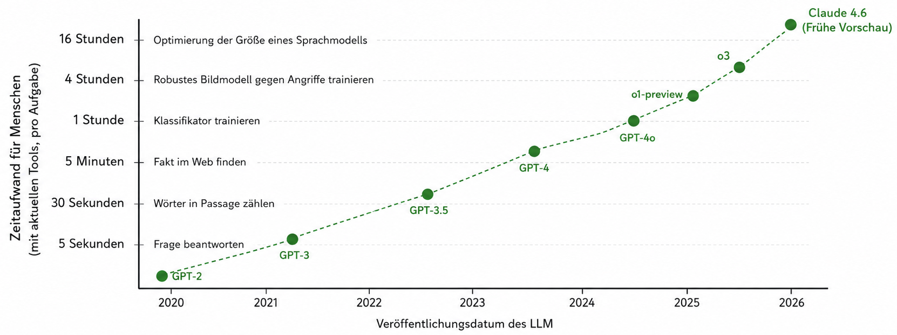
Graphic übersetzt und vereinfacht
KI - Entwicklung - 2026 2/2
Top Forscher lösen lange ungelöste Probleme, erstmals mit KI Sprachmodelle,
- aber nur wenn sie die Sprachmodelle richtig steuern können.
- je höher ausgebildet, desto besser die Steuerung, desto höher der Nutzen.
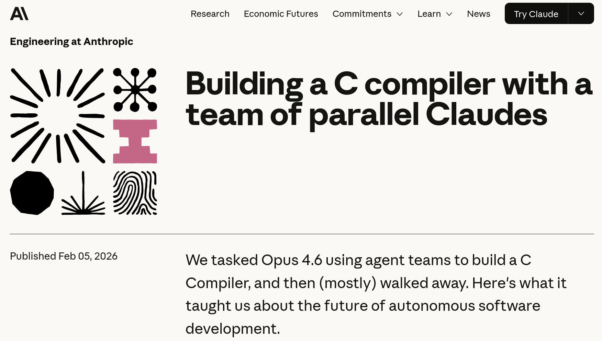
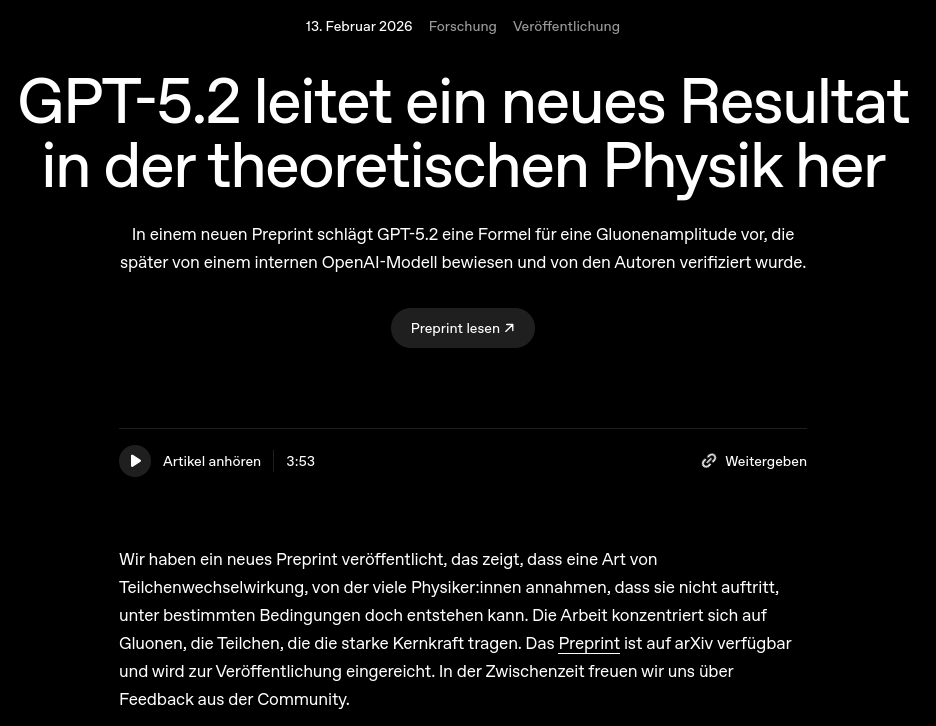
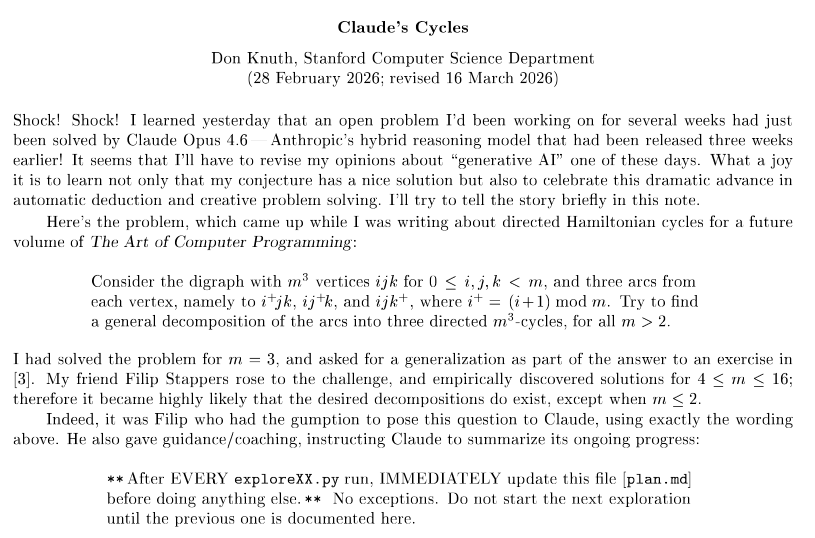
Cycle
links: (Knuth, n.d.; OpenAI 2024; Anthropic 2024)
ICT Arbeitsmarkt
Nicole Helmer, Vice President & Global Head of Development Learning bei SAP
Neben dem unbestreitbaren Bedarf an einer verantwortungsvollen KI-Entwicklung und einer breiten KI-Kompetenz in sämtlichen IT-Berufen müssen alle Mitarbeitenden ihre übergeordneten Fähigkeiten wie kritisches Denken, Kreativität und komplexes Problemlösen verbessern.

Erweitertes Denken
Ja gerne!
- Ideen finden, auf die wir selbst nicht kommen.
- Ergebnisse geistiger Arbeit erzielen, die vorher nicht möglich waren.
- Uns kognitiv selektiv entlasten.
- Geistiger Autor sein/bleiben.
- Kompetenz behalten, erweitern, entwickeln.
Nein danke!
- Kognitive Fähigkeiten verkümmern lassen.
- Fehlerhaft Inputs übernehmen.
- Geistige Autorenschaft verlieren.
- Vertrauliche Daten weitergeben.
Zeitenwende 🞋
NZZ Interview: KI-Analyse von Schüler:innen Statements
Arbeitsauftrag: Analysiert die Aussagen der Schüler:innen im Interview mittels ChatGPT. Welche Chancen und Herausforderungen sehen sie?
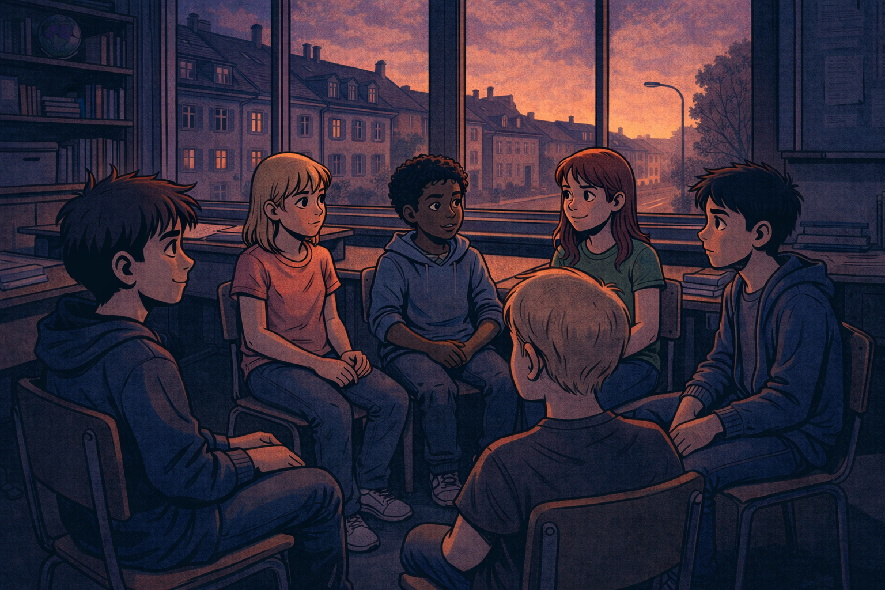
Ergebnis: Chancen und Herausforderungen
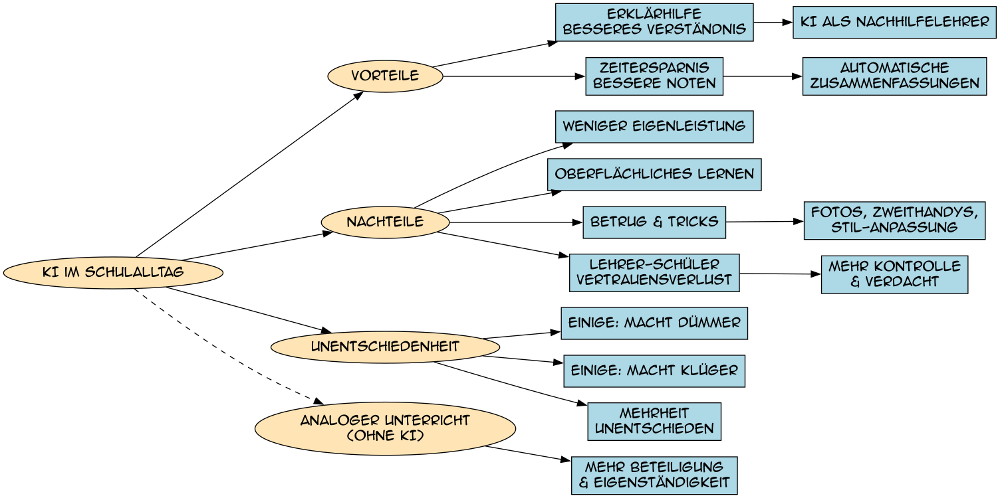
ChatGPT Analyse
Research
Was sagt die Forschung zu den Auswirkungen von KI auf Lernen und Gedächtnis?:
MIT:“Over four months, LLM users consistently underperformed [less cognitive load, less recall] at neural, linguistic, and behavioral levels. These results raise concerns about the long-term educational implications of LLM reliance and underscore the* need for deeper inquiry into AI’s role in learning.”
Meta-Analysis: “[The study] indicates a large positive impact [large standardized mean difference] (g = 0.867) of ChatGPT on student learning performance. … [with] significant differences […] in the type of course, learning model, and duration. [For] higher-order thinking, it is crucial to provide corresponding learning scaffolds or educational frameworks*”
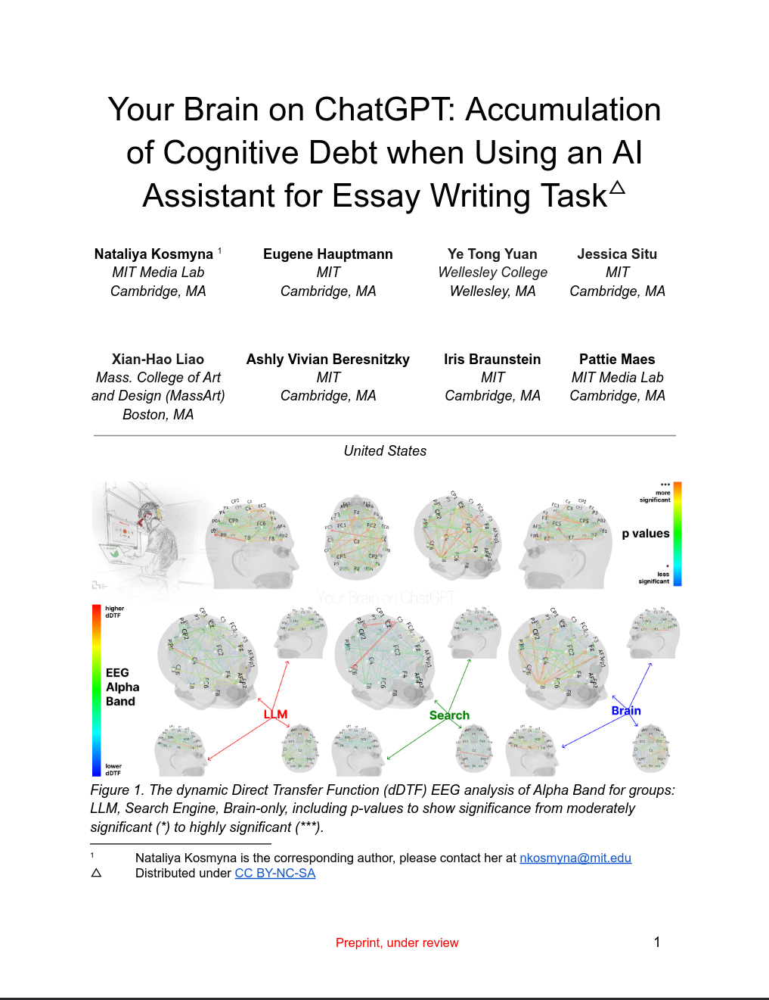
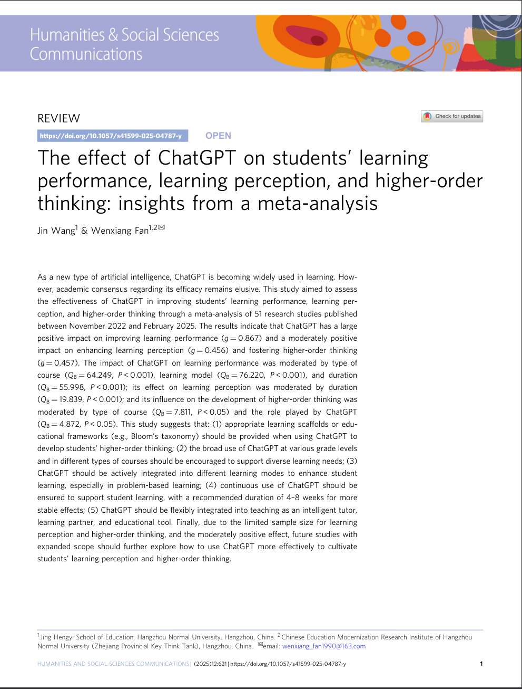
Wolfgang
Im Detail
Forschung sieht kognitives Auslagern (Cognitive offloading) als Problem, wenn KI in der Schule eingesetzt wird:
“Our findings highlight the need for thoughtful integration of generative AI in educational settings to ensure that human learning is preserved.” Bastani et al. (2025)
“Results indicated that students using LLMs experienced significantly lower cognitive load. …, these students demonstrated lower-quality reasoning and argumentation …” Stadler et al. (2024)
Marc
Cognitive Offloading
Cognitive offloading reduziert die kognitive Belastung, definiert in Risko and Gilbert (2016)
Nichts neues, seit der Informationstechnologie ist es möglich, kognitive Aufgaben an externe Geräte auszulagern.
- Bücher: Nehmen uns das Erinnern ab, aber man muss nun lesen und schreiben können.
- Rechenmaschinen: Nehmen uns das Rechnen ab, aber man muss nun mit vielen Zahlen (Tabellen) umgehen können.
- Suchmaschinen: Nehmen uns das Recherchieren ab, aber man muss nun mit viel mehr Informationen umgehen können.
- Denkmaschinen: Nehmen uns das Denken ab, aber man muss nun ….
- KI steuern, kritisch überwachen und Ausnahmesituationen auflösen können.
Wolfgang
Bildung im Sandwich
KI Arbeitswelt verlangt zunehmend höhere Denkfertigkeiten und kreative Problemlösungen, für die kritisches Denken, tiefes Wissen und ganzheitliche Kompetenzen notwendig sind.
KI Nutzung der Schüler*innen kann zu kognitivem Offloading führen, wodurch tiefes Wissen und ganzheitliche Kompetenzen nicht mehr aufgebaut werden.

II.
Lernen mit und trotz KI
KI sensitive Pädagogik 1/2
Wie beim Sport, wo wir freiwillig auf Hilfsmittel verzichten, um unsere Fähigkeiten zu trainieren, brauchen wir die gleiche Haltung für den Umgang mit KI.
Es geht um unsere kognitive Fitness.
KI-sensitive Pädagogik 2/2
Lernsituationen müssen – gerade mit KI – bewusst kognitive Eigenleistung fordern.
- Nach Newmann und Bransford entsteht authentische intellektuelle Arbeit, wenn Lernende:
- Wissen/Kompetenzen selbst aufbauen – statt nur reproduzieren,
- Abläufe analysieren, synthetisieren und bewerten – statt Verfahren nachzuahmen,
- Kompetenzen auf neue Situationen übertragen können.
Lernsituationen müssen produktive kognitive Herausforderungen erschaffen, die motivieren, kognitive Kernaufgaben selbst zu tun und nicht einfach an die KI zu delegieren.
Diskussion
Diskussion im Plenum: Wie könnte das aussehen?
Mit KI auf Augenhöhe 1/2
Wir wählen schlecht an KI delegierbare Aufgaben:
- KI kann nur schwer abschätzen, was nicht in ihren Trainingsdaten vorkommt: Unbekanntes / Letzte Klassenfahrt / Schlussfolgern über dort erlebtes
- KI scheitert bei schlecht spezifiziertem Kontext: Lerndende müssen unterspezifizierte Aufgaben konkretisieren
- KI ist nicht gut darin, „echt persönliche“ Merkmale zu erzeugen: Lerndende müssen ihre eigenen Erfahrungen, Meinungen, Gefühle einbringen
- KI ist gibt oft keine gut begründete Auswahl zwischen gleichwertigen Optionen: Lernende müssen die Auswahl selbst treffen.
- KI ist schlecht im Schlussfolgern über lange Ketten: Lerndende müssen komplexe Schlussfolgerungen selbst erarbeiten.
1. Zeichnen 🞋
Wir wollen ein Bild zeichnen, mit ChatGPT.
Aufgabe: Prompte ChatGPT so das ihr möglichst nahe an das gesuchte Bild kommt. Bild nicht hochladen!
Zeichnen mit KI 2/2
Wenn wir die Stimmung nicht angeben, nur die Umgebung, bekommen wir ein ganz anderes Bild.
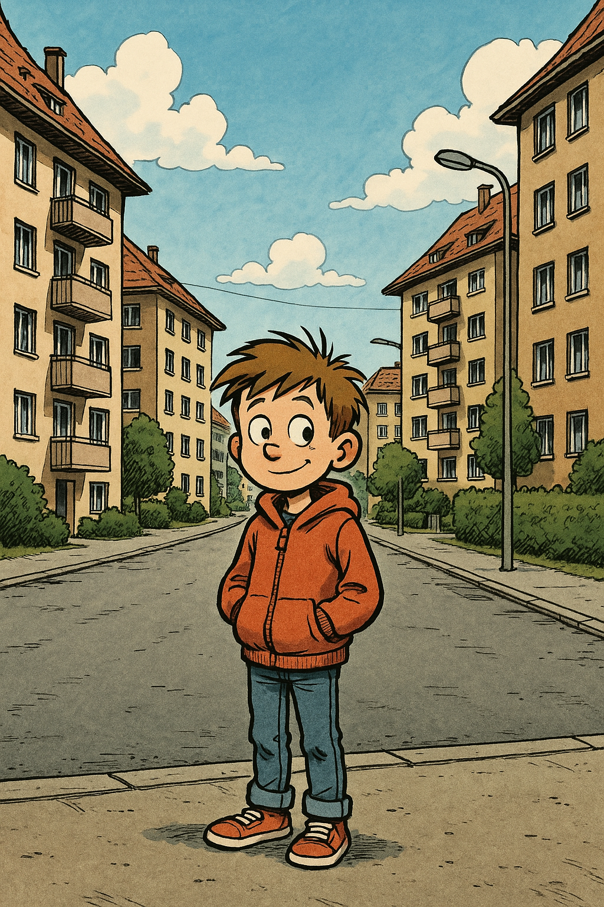
3
Comiczeichnen
Comic Zeichnen ist richtig aufwendig. ChatGPT kann uns dabei helfen. Die Story muss aber von uns kommen.
- Storyline: Die Geschichte in einem Satz.
- Storyboard: Wie sieht die Geschichte aus?
- Bildbeschreibung: Was ist auf den einzelnen Bildern zu sehen?
- Dialoge: Was sagen die Figuren?
- Zeichnungen: Zeichne jeweils ein Bild (Panel) mit KI.
- Zusammenfügen: In einem Graphikprogram, füge die Bilder und Dialoge zusammen.
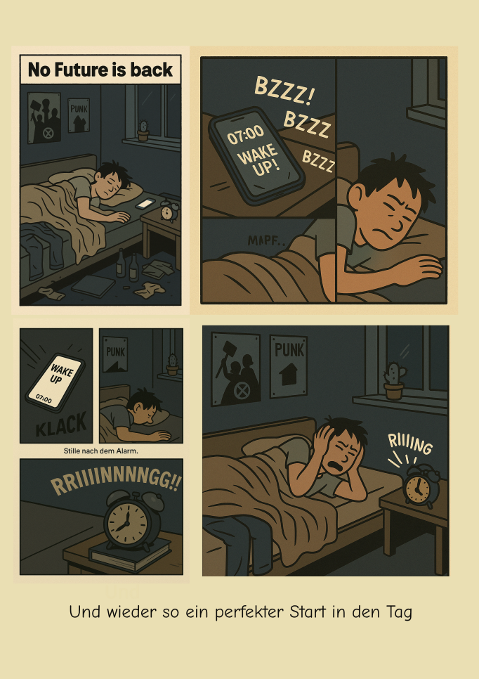
2. Richtig-Falsch-Fragen 🞋
Aufgabe: Prompte ChatGPT, wie unten und beurteile die verschiedenen Antworten:
Im Kontext der Schweizer Geschichte: Gründung der Schweizerischen Eidgenossenschaft, beurteile die folgenden zwei Fragen:
War die Gründung des Schweizer Bundesstaates 1848 ein Erfolg?
Beurteile, ob die Schweizer Bundesverfassung von 1848 die Hauptkonflikte des Sonderbundkrieges gelöst hat. Unterscheide zwischen religiösen, politischen und wirtschaftlichen Konflikten und bewerte die Situation aus der Perspektive eines katholischen konservativen Kantons und eines liberalen städtischen Kantons.
Wie unterscheiden sich die Antworten? Welche erfordert mehr Kompetenz von den Lernenden im Umgang mit KI? Warum?
3. Geschichtsverständnis
Aufgabe: Prompte ChatGPT, wie unten und beurteile die Antwort:
Hilf mir bei dieser Schulaufgabe: „Welche Rolle spielte die sogenannte Kollektivvereinbarung von Olten im Oktober 1918 für die Verschärfung der Spannungen vor dem Landesstreik? Gib eine differenzierte Einschätzung.“
Zeige mir die wichtigsten Punkte mittels eines farbigen und gut lesbaren, von Links nach Rechts gezeichneten, Mermaid Mindmap Plots.
Beurteile die Antwort von ChatGPT:
- Welche Aussagen macht ChatGPT?
- Wie faktisch korrekt ist die Antwort?
Mit KI auf Augenhöhe 2/2
Die Lernenden erarbeiten sich ganzheitliche Kompetenzen mittels eines Dialogs mit der KI.
- KI hilft beim gesamtheitlichen Erfassen eines komplexen Gebiets
- KI hilft bei Einzelschritten aber nicht Ende-zu-Ende
- KI hilft beim Reflektieren über den Lösungsweg. Lösung muss aber selbst erarbeitet werden.
Die Lernenden müssen die Ergebnisse der KI verstehen, sie konsolidieren und ihre ‘Erkenntnisse’ der Klasse präsentieren.
4. Biologie
Aufgabe: Prompte ChatGPT, wie unten und beurteile die Antwort:
Hilf mir bei dieser Schulaufgabe: “Die Forschung bei Altos Labs des Amazon Gründers Jeff Bezos hat die führenden Longevity Forscher der Welt rekrutiert und fokussiert sich auf biologische Verjüngungstechnologien, um die”biologische Uhr” zurückzudrehen. Es ist der Firma gelungen Zellen von alten Mäusen in einen Zustand zu versetzen, der dem von jungen Mäusen ähnelt. Nun testet sie offenbar die Reprogrammierung von Organen außerhalb des Körpers („ex vivo“), die maschinell ausserhalb der Körpers verjüngt werden. Reiche Personen mit degenerierten Organen könnten so ihre Organe verjüngen lassen. Gib eine differenzierte Einschätzung.”
Welche Aussagen macht ChatGPT? Wie faktisch korrekt ist die Antwort? Lass Dir von KI helfen, aber Achtung das kann falsch sein!?
5. Kurvendiskussion
Die Schüler*innen erarbeiten sich die Grundlagen der Kurvendiskussion.
Aufgabe nach kurzer Einführung in prompt engineering, prompten die Schüler*innen ChatGPT mit:
Bitte gib mir den Matplotlib code um die function y = x³-3x²-9x+27 zu zeichnen
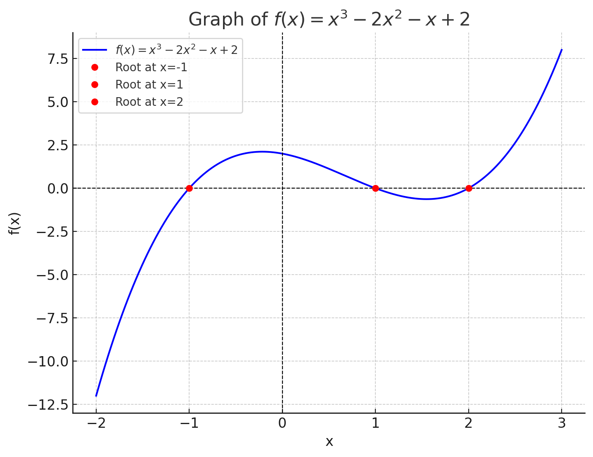
- Führt den Code aus. Was sagt der Plot aus? Beschreibe die Funktion in Worten.
- Weise die KI an, Nullstellen, Extremstellen und evtl. Wendestellen zu berechnen und im Plot zu markieren.
- Frage die KI nach, wenn Du Begriffe nicht verstehst. Frage nach einer Erklärung in einfachen Worten und nach einer mathematischen Definition.
- Präsentiere die Ergebnisse in der Klasse. Was hast du verstanden? Was nicht? Wie könntest Du Deine Darstellung verbessern?
6. Känguruh-Math 🞋
Die Schüler*innen verstehen graphisch eine komplexe Känguruh Aufgabe.
Nina hat einen Kreis mit 20 Punkten in 20 gleich lange Kreisbögen geteilt. Sie zeichnet alle Sehnen ein, die zwei dieser Punkte verbinden. Wie viele dieser Sehnen sind länger als der Radius, aber kürzer als der Durchmesser des Kreises?
was it richtig?: (A) 90 (B) 100 (C) 120 (D) 140 (E) 160
- Diskutiert mit Euren Nachbarn was die Aufgabe bedeutet.
- Erklärt Euch die Aufgabe. Macht dazu eine Zeichnung erst per Hand, dann mit ChatGPT.
- Versucht die Aufgabe nur mittels der Zeichnung zu lösen. Passt mittels KI die Zeichnung an, wenn ihr nicht weiterkommt.
Diskussion
Diskussion im Plenum: Wie könnte das aussehen?
AIDu - KI Lerntechnologien
KI-Lerntechnologien entwickeln,
die pädagogische Prinzipien verbindlich umsetzen
didaktisches Zielverhalten definieren und umsetzen
Qualität von KI-Lerndialogen in Echtzeit sichern
Risiken erkennen und begrenzen

Chemie mit AIDU
Berner FH: Hochschule für Agrar-, Forst- und Lebensmittelwissenschaften HAFL
- viele Studiumsanfänger.innen die kein/wenig Grundwissen in Chemie mitbringen.
- aber ….
- Agrarchemie
- Lebensmittelchemie
- Umweltchemie
- Biochemie
Kann KI Lerntechnologie helfen?
AIDu - Chemie Tutoring
AIDu - Lehrersicht
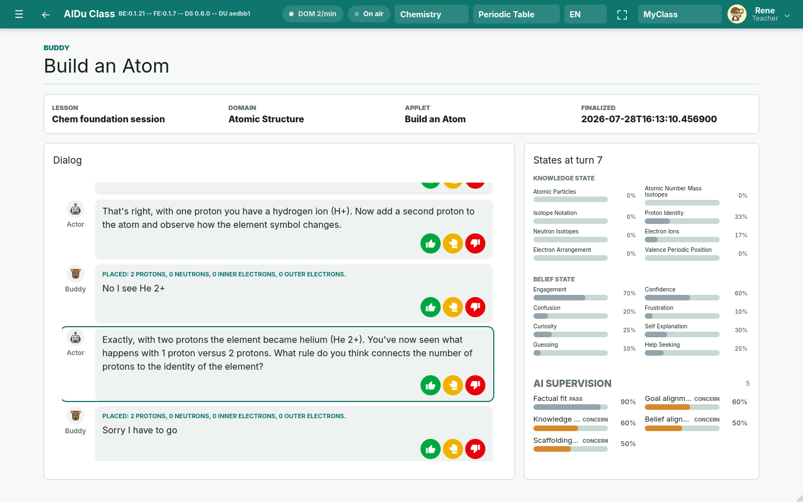
AIDu-Lernbegleitung

“Schweiz aktuell”, Schweizer Fernsehen “Rendez-vous”, Radio SRF Beitrag auf SRF online
7. Baue-ein-Element 🞋
- https://sebayt.ch/aidu/
- Voucher: aidu_wolfsclass_863f0bff
Diskussion
Diskussion im Plenum
Materialien
- PDF version dieser Präsentation:
- Im Browser [e] drücken und “Print to PDF” auswählen
- “Interagieren mit KI auf Augenhöhe” Handout:
- in Arbeit: Wird per Mail verschickt, sobald fertig
- https://github.com/WolfgangSpahn:
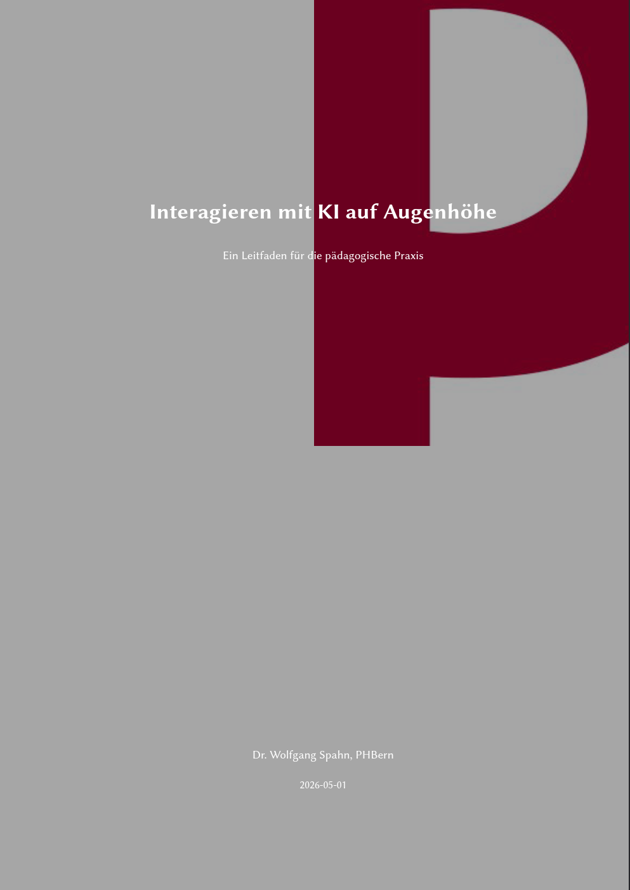
_
AI, ‘Alien Intelligenz’, ist gekommen um zu bleiben. Wir - Lehr- und Lernende - müssen lernen, wie wir sie pädagogisch sinnvoll einsetzen können, um geistige Fähigkeiten zu stärken, statt sie zu schwächen.
Abschlussplenum
Feedback zum Atelier, offene Fragen, Diskussion
Input I
Input II
_
- Danke für die Aufmerksamkeit -
>/
_
- Danke für die Aufmerksamkeit -
>/
Ergebnis: Log. Denken
KI versus Mensch. Was fällt auf?
Die Reihe
- ‘>’ steht für 0
- ‘v’ steht für 1
Wir haben also 4-stellige Bit-Zeilen (wie Binärzahlen):
- ‘> > > >’ → 0000 → Dezimal 0
- ‘> > > v’ → 0001 → Dezimal 1
- ‘> > v >’ → 0010 → Dezimal 2
Man sieht: Die Zahlen zählen einfach im Binärsystem hoch: 0, 1, 2, …
Die nächste Zahl wäre dann: 3 im Dezimalsystem; 0011 im Binärsystem:
- 0 0 1 1 → ‘> > v v’
Darum muss das Fragezeichen ein ‘v’ sein.
Die Hüte
Wenn Carla zwei weisse Hüte sieht, weiss sie dass der Rest schwarze Hüte sein müssen. Sie schliesst also auf einen schwarzen Hut für sich selbst.
| Nr. | Anna | Bernd | Carla |
|---|---|---|---|
| 1 | ◼️ | ◼️ | ◼️ |
| 2 | ◻️ | ◼️ | ◼️ |
| 3 | ◼️ | ◻️ | ◼️ |
| 4 | ◼️ | ◼️ | ◻️ |
| 5 | ◼️ | ◻️ | ◻️ |
| 6 | ◻️ | ◼️ | ◻️ |
| 7 | ◻️ | ◻️ | ◼️ |
Kann Carla nur aus den Aussagen der anderen beiden auf die Farbe ihres Hutes schliessen?
Der verschwundene Test
Die naheliegendste Erklärung ist:
- Die Mathetests sind nicht gestohlen worden, sondern durch den Wind vom Schreibtisch aus dem Fenster geweht worden.
Also: Kein Diebstahl, sondern ein „Papier-Desaster“ durch das übers Wochenende offene Fenster.
Mustererkennung 🞋
\[ {\tiny Formel: \mathrm{output} = \mathrm{\tanh}\left( \mathrm{input}_1 \cdot \mathrm{weight}_1 + \cdots + \mathrm{input}_4 \cdot \mathrm{weight}_4 \right) } \]
Literature

Dr. Wolfgang Spahn